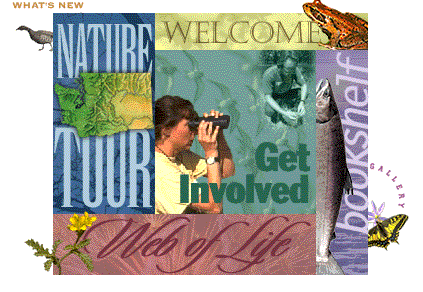
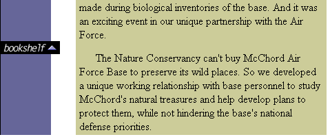

|
| ||
|
| ||
Marc Strauch
Microsoft Corporation
July 16, 1996
Contents
Abstract
Introduction
Before You Start
Design and Navigation
Icon and Brand Recognition
Technology Applications
Site Tour
Welcome
Nature Tour
Web of Life
Get Involved
Bookshelf
What's New and Gallery
End Note
This article provides a tour of The Nature Conservancy of Washington (TNCW) Web site. The article introduces the sections and features of the site, and describes the elements that add functionality, enhance presentation, and take advantage of new technologies.
Editor's note: (July 15, 1996)--This article was written when the TNCW site was undergoing final implementation--before the site went live on the Web. As such, some of the site features documented in this article may have changed and new features added after we finalized this article. We encourage you to visit and explore the live TNCW site at http://www.tnc-washington.org  for the latest features.
for the latest features.
The Nature Conservancy is an international non-profit land conservation organization, based in Washington D.C. with field offices and nature preserves throughout North America and the world. Each field office is self-supporting and responsible for the nature preserves within its territory. This article discusses the Web site created for the Washington State field office of The Nature Conservancy (TNCW).
In late 1995 and early 1996, Gordon Todd, TNCW Communication Director, championed the development of a Web site as an additional communication tool for informing TNCW members of statewide initiatives, preserves, and other news. Response within the organization, from fundraising and development through the executive level, was enthusiastic.
Because Web technologies were changing so rapidly and the costs involved in developing and maintaining a site were beyond the financial abilities of the Washington office, the project was put on hold until the organization could make specific fundraising plans to cover development costs.
Shortly after this decision to postpone the development of the site, a local Conservancy member and Microsoft employee, Tammy Steele, was able to interest Microsoft executives in sponsoring a Washington Nature Conservancy site. The site would be developed by service providers and design firms in the Seattle area, and Microsoft would help activate the site with new technologies. The TNCW team selected the Seattle office of Tim Girvin Design to design the site, and Seattle-based Metabridge signed up to do the programming, production, and technical implementation work. Several developers from Adobe, Macromedia, and Progressive Networks provided technical support for the implementation of their controls on the TNCW site.
This article provides a guided tour of the Washington Nature Conservancy site, which is now available on the Web at http://www.tnc-washington.org  . The article is best used in conjunction with the site itself. For additional information on the technologies used to build the TNCW site, see the articles in the Nature Conservancy project page.
. The article is best used in conjunction with the site itself. For additional information on the technologies used to build the TNCW site, see the articles in the Nature Conservancy project page.
The TNCW site was optimized for Microsoft® Internet Explorer version 3.0 or later. You can use other browsers to view this site, but you will not be able to see all of its features unless your browser supports ActiveX™ controls. You can download Internet Explorer from the Microsoft Internet Explorer site  -- please be sure to do so before we begin our tour.
-- please be sure to do so before we begin our tour.
This site uses Web technologies such as Macromedia® Active Shockwaveª, Progressive Networks RealAudioª, Adobe® Acrobat® Reader and control, and other ActiveX controls. To view the features of the site, you will need to download these software components to your system. In most cases, viewing a page will automatically download the components used on that page. Or, you can download all software components beforehand by simply following the instructions in the "Using This Site" page, available from the upper-right corner of the home page.
When you enter the TNCW site, you are presented with a rectangular graphic divided into five areas, representing the five major sections of the site. Each area has a distinctive color, and users can click an area to jump to the corresponding section of the site. (This navigation feature uses tables and image maps.)

Figure 1. Major sections of the TNCW site introduced from the home page
The color palette selected for each area is important to remember. Each section has its own color theme that is repeated in the navigation frames, making it easy to identify your current location and to navigate to a new section. The section colors are repeated in the vertical navigation bar on the left of each page, and on the horizontal navigation bar at the bottom of each page.
Figure 2. Color themes in the vertical navigation bar
The green oak leaf icon representing The Nature Conservancy is repeated throughout the site and used as a navigation element that takes you back to the home page.
Figure 3. Oak leaf icon
For long, scrollable pages, the designers have placed markers with a triangle pointing up at regular intervals along the left. You can click these images to return to the top of the page.

Figure 4. "Back to top" icon
The left-facing triangle at the top of each page, after the section heading, further simplifies navigation by moving you to the home page for that section. You'll find this icon especially useful when viewing content that is several levels deep in the section hierarchy.
Figure 5. "Back to section home page" icon
These simple navigation tools allow readers to browse the site and find the information they need easily. Color coordination in section identifiers, subject headings, and navigation bars result in a consistent and intuitive interface. Repeated themes -- in graphics, colors, and icons -- allow the user to focus on content instead of trying to "figure out" navigation.
As a field office of The Nature Conservancy, the Washington chapter is responsible for the prudent use of the organization's name and icons in all activities. Communication materials or merchandise that bear The Nature Conservancy name or icon must reflect the integrity and spirit of the mother organization.
The green oak leaf icon shown in Figure 3 above is used frequently throughout the site. When it appears at the upper-left corner of a page, this icon serves as a navigation tool linking the user back to the home page. The name "The Nature Conservancy" also appears on all pages, clearly representing TNCW's alliance with the national organization. The repeated use of the oak leaf icon and "The Nature Conservancy" label throughout the site associates these elements with conservation and land preservation in the reader's mind.
(See The Hidden Challenges of Going Online for a discussion of how TNCW transitioned from the traditional media to the Web. For more information on the design considerations and choices made by the design team for the TNCW site, be sure to read On the Road to Good Web Design.)
The table below lists the technologies used on the TNCW site, with examples of pages that utilize each technology. We encourage you to peek behind each TNCW page (right-click within a page and select View Source) to see the HTML source and scripting code used for each technology. For additional examples and descriptions of these technologies, click the section headings in the table to jump to the appropriate section of the Site Tour.
Editor's note: (August 7, 1996) -- We've coded the jumps in the table below to bring up the site in a new browser window, so you can see the examples and this article without having to use the Back button several times.
The features and technologies used within each section of the site are described below. All sections can be accessed from the TNCW home page as well as from the vertical and horizontal navigation bars provided on each page of the site.
The Welcome section of the site consists of five subsections:
What is The Nature Conservancy of Washington? is introduced with a graphic set against a background of moving clouds, which was implemented using an animated GIF. Clicking the icon moves you to a page that makes extensive use of tables with cell background colors.
Our Mission also makes use of tables to present TNCW's mission statement.
Greetings uses RealAudioª to present a 36-second audio message from Elliot Marks, Executive Director of TNCW. You can play, pause, or stop the audio stream. When you play the greeting, you'll also see the greeting text scroll on the screen through the use of an ActiveX control. You can also view a longer version of the greeting on the Web page.
History illustrates the use of an ActiveX timeline control and the HTML Layout Control to present an interactive timeline set within the cross-section of a tree. You can either click the arrows on either site of the timeline, or drag the oak leaf icon to a specific date to view TNC historical information for that date. Three rotating photographs surrounding the tree. These are GIF animations, displayed at 8-10 second intervals, illustrating significant moments in TNC history.
Did You Know? uses Visual Basic Scripting Edition (VBScript) to display a rotating list of 14 facts in 10-12 second intervals.
The Washington Nature Conservancy office manages 29 nature preserves in Washington State. Ten of these preserves were selected for showcasing on the site.
Preserves of Washington uses a map of Washington State to show the locations of the ten selected preserves. You can click the numbers on the map or in the listing to view a larger map and a description of each preserve.
On the individual preserve pages, you can click the right-pointing arrow at the lower right of the Washington map to display a pop-up menu listing the ten preserves -- you can choose from this menu to view another preserve easily. The menu was implemented through the ActiveX pop-up menu control.
The individual preserve pages illustrate additional ActiveX technologies. For example, the Skagit River preserve page uses the Adobe Acrobat control and an embedded PDF file to provide a tour of the Skagit River preserve.
Preserve Access & Rules uses borderless frames to provide information on each preserve without requiring the user to navigate through multiple pages. (Note that Netscape® Navigator® does not support borderless frames, so Navigator users will see borders.) When you click a preserve name from the Washington map, the two frames in the lower right display directions for accessing, and special rules for, that specific preserve.
Virtual Tour presents a multimedia slide show with narration, music, and sound effects, making use of streaming audio, frames, and the VDOLive Video Player for ActiveX. The "walking footprints" are achieved through a GIF animation.
Cooperative Conservation gives a quick tour of four locations in Washington where TNCW has cooperated with a government agency to preserve specific habitats.
Did You Know? uses VBScript (as in the Welcome section) to automatically display facts in 10-12 second intervals.
What is the Web of Life? uses static photographs and text to describe biodiversity. Like most other pages, it takes advantage of tables with background cell images and background colors to format and highlight the information.
10 Things You Can Do uses a two-column table with images and text to present a basic list of what individuals can do to help protect and conserve the environment.
Resources & References provides a bibliography of books, monographs, and primers on natural resources, environmental policy issues, and biodiversity.
Life in Balance (represented by an animated GIF on the Web of Life home page) uses frames and an image map to present an illustrated natural scene. You can click an animal in the image to obtain detailed information on its habitat, diet, and threats to its existence.
Community Information provides general information for TNCW members:
Kid's Corner (represented by an animated GIF on the Get Involved home page) includes an ecosystem game implemented with the Macromedia Active Shockwave control.
Volunteer Opportunities & Calendar of Events consists of a screen with two scrollable frames and non-scrolling headings. The top frame provides a listing of volunteer activities with photographs. It uses a style sheet to specify formatting for page elements and provides two classes for the <P> tag (customizing the point size, indentation, and leading for standard paragraphs and photograph captions).
Washington Wildlands Magazine is the online version of the TNCW quarterly magazine. The Web pages use style sheets. A PDF version of the latest issue is also available for viewing via the ActiveX Acrobat Reader.
News & Updates (represented on the Bookshelf home page through an animated GIF) presents recent TNCW and conservation news. It also has a section with facts displayed in 10-12 intervals, in the manner of the Did You Know? feature.
Annual Report uses style sheets and tables to display the TNCW 1994 annual report.
Cool Conservation Sites provides links to other conservation-related sites, including the national office of The Nature Conservancy, the National Heritage Network Server, and Bat Conservation International.
Did You Know? uses VBScript (as in sections discussed previously) to automatically display facts in 10-12 second intervals.
What's New is accessed by clicking the duck in the upper-left corner of the Nature Tour graphic on the TNCW home page. This section highlights some of the noteworthy information on the site; in future updates, it will provide quick access to new and revised information.
Similarly, you can access the Gallery by clicking the butterfly located in the lower-right corner of the Bookshelf graphic on the home page. The Gallery includes a selection of photographs presented in slide-show format and accompanied by sounds of nature, taken by TNCW staff, members, and professional photographers. You can click from the list on the left or wait for the photographs to be displayed automatically, in 15-20 second intervals. This page uses a floating frame to display the photographs and VBScript to control the rotation of photographs.
The Nature Conservancy of Washington Web site offers the public an impressive amount of material, including membership information, photographs, and maps, previously available only to subscribers or members of the Conservancy.
The combined expertise of Tim Girvin Design, Microsoft, Metabridge and TNCW has resulted in a sophisticated Web site that does a masterful job presenting complex information in a form that is simple to navigate and fun to use. Be sure to check the TNCW site on the Web at http://www.tnc-washington.org  for future updates.
for future updates.
Did you find this material useful? Gripes? Compliments? Suggestions for other articles? Write us!
© 1999 Microsoft Corporation. All rights reserved. Terms of use.